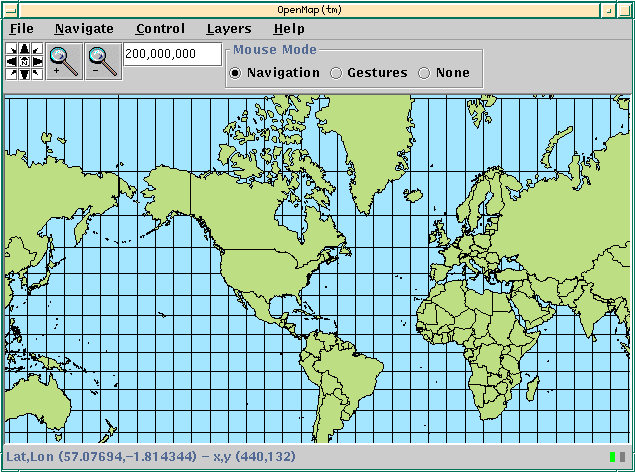
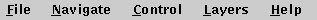
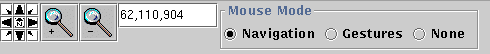
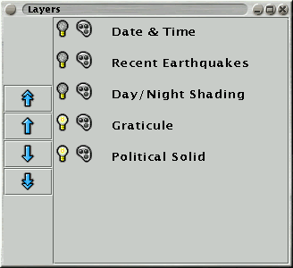
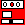
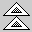
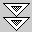
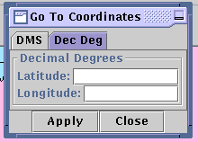

Once the OpenMap Viewer application starts you will see a map of the
Earth with a 10° graticule.


Rosette
The rosette pans the map in the specified direction and the
middle button recenters the view to the starting point.Magnifying Glass +
Zooms in 2X over the center of the map.Magnifying Glass -
Zooms out 2X over the center of the map.Scale Entry
Enter the scale of the map.Mouse Mode... Change the mouse behavior.
Navigate allows you to move around on the map.
Gestures passes mouse events through to layers.

In addition to adding and removing layers from the map, the Layer
Editor allows you to change their vertical position in relation to
each other, and bring up their specific palette controls.
Turn layer off/on.

Turn layer palette controls off/on.

Move selected layer to top of map.
Move selected layer up one level in map.
Move selected layer down one level in map.

Move selected layer to bottom of map.

Specify coordinates in decimal degrees or DMS. Click apply and the map
will be recentered over the position indicated.